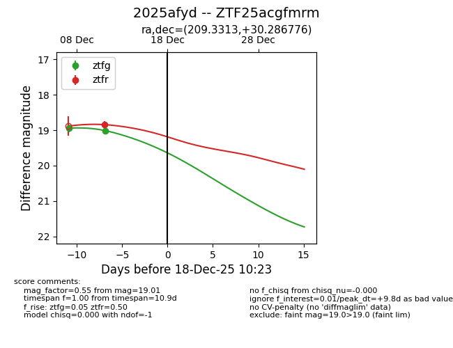
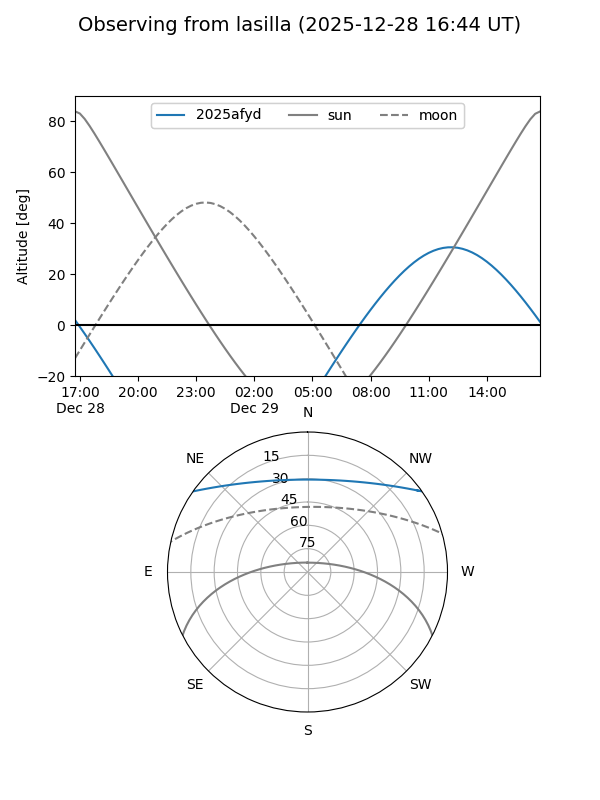
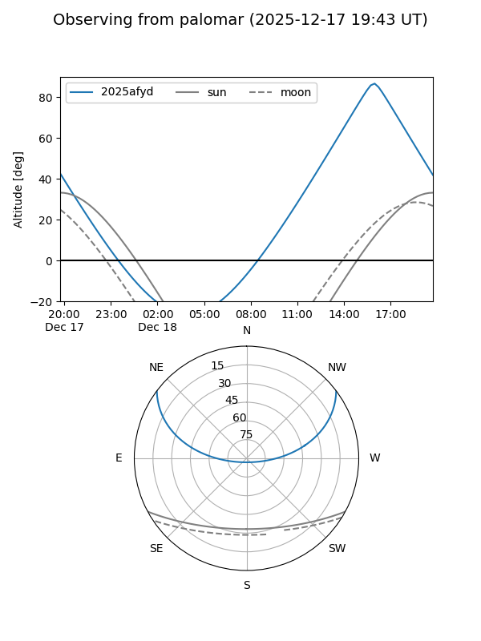
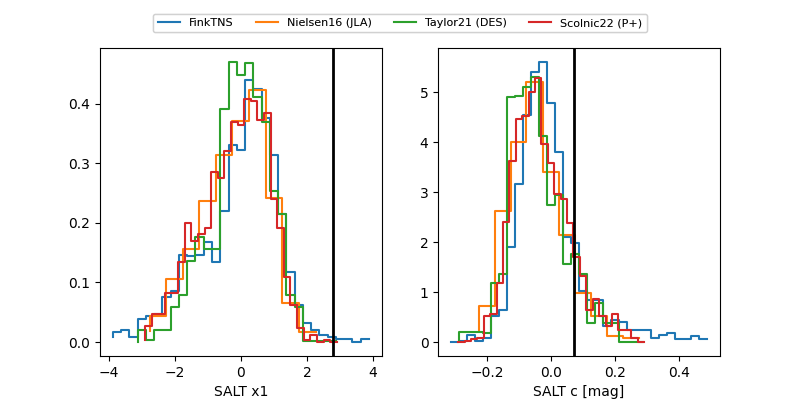

2025afyd
Target 2025afyd at 2025-12-30 16:18
Aliases and brokers:
FINK: fink-portal.org/ZTF25acgfmrm
Lasair: lasair-ztf.lsst.ac.uk/objects/ZTF25acgfmrm
ALeRCE: alerce.online/object/ZTF25acgfmrm
TNS: wis-tns.org/object/2025afyd
YSE: ziggy.ucolick.org/yse/transient_detail/2025afyd
alt names
ZTF25acgfmrm (ztf,fink_ztf)
2025afyd (tns,yse)
Coordinates:
equatorial (ra, dec) = 209.3313,+30.28678
equatorial (HMS+DMS) = 13:57:19.51,+30:17:12.39
galactic (l, b) = (49.1589,+75.22629)
Flags:
Photometry:
last atlaso=19.00, ztfg=19.38, ztfr=19.06
2 atlaso, 4 ztfg, 4 ztfr detections
Lightcurve

Visibility


Additional plots
